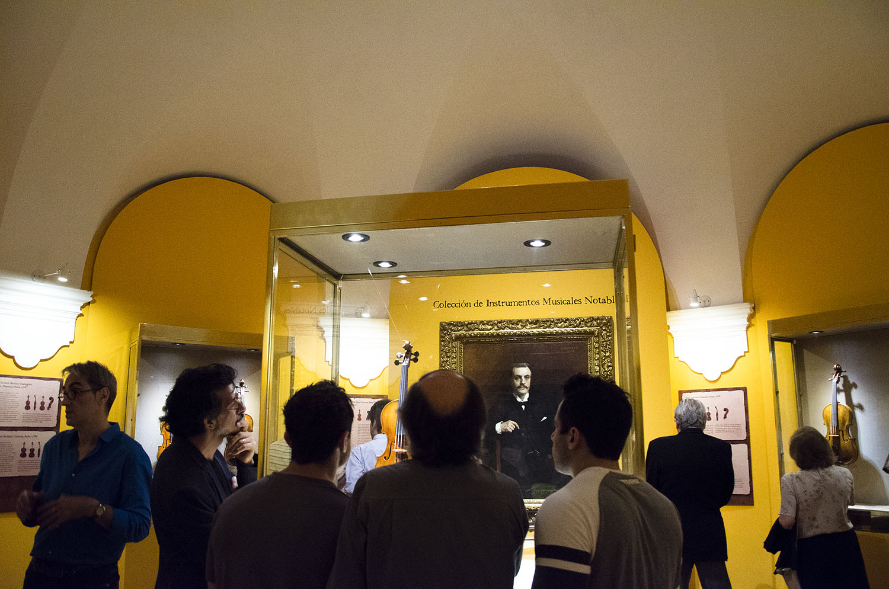
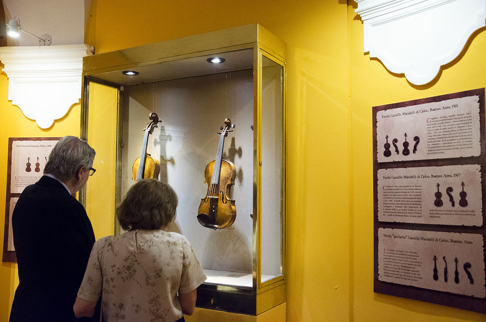
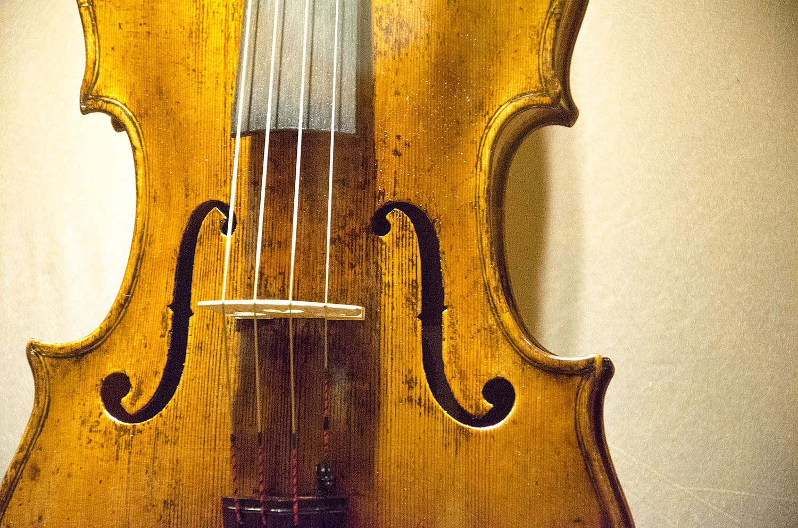

Sala de exhibición dedicada exclusivamente a los antiguos instrumentos de la familia del violín. Se trata de un conjunto de piezas que, por su número y calidad, es único en Latinoamérica, y puede compararse favorablemente con importantísimas colecciones de instrumentos de algunos pocos museos en el mundo.
Como es sabido, Italia ha mantenido su supremacía como nombre vinculado a la calidad y prestigio de los instrumentos de arco. Desde que los primeros violines conocidos fueron construidos por el gran Andrea Amati en Cremona en la segunda mitad del siglo XVI (c.1560), se hicieron tan populares que no tardaron en llegar allí encargos desde diversas ciudades y cortes de Europa. La familia Amati continuó la tradición hasta la década de 1740, pero ya en el siglo XVII, el célebre Nicola Amati, nieto de Andrea, había formado -o influído directamente- a un valioso grupo de artesanos, entre los que se encontraban Andrea Guarneri, Francesco Ruggieri, Giovanni Battista Rogeri y el celebérrimo Antonio Stradivari. Entre los miembros de la familia Guarneri, se destacó Bartolomeo Giuseppe (1698-1744), conocido como Guarneri del Gesù, uno de cuyos instrumentos, construido en 1732, es la “estrella” de la colección del MIFB.
 Foto: Mariana Cullen.Puede decirse que la labor de Andrea Amati fue como una especie de Big Bang a partir del cual se construyeron –como reflejo de un verdadero furor- instrumentos de la familia del violín, no sólo en Italia sino también en otros países donde los luthiers locales copiaron o imitaron los instrumentos que traían los músicos de sus viajes. Compositores y virtuosos violinistas como Corelli, Vivaldi, Veracini, Locatelli y Tartini, entre muchos otros, desarrollaron nuevas técnicas que se difundieron por toda Europa. Paralelamente a esto nacieron diversas escuelas de luthería, que ajustaron sus modelos, generalmente nacidos del de Amati, a sus gustos locales. En Europa en general y en Italia en particular, era común en las artes y oficios, que los hijos –generalmente los mayores- continuasen la labor paterna.
 Foto: Mariana Cullen.Es así como se forman las llamadas “dinastías” de luthiers, como la de los Amati, que duró casi doscientos años, la de los Guarneri, la de los Ruggieri, la de los Bergonzi, la de los Guadagnini (más larga aún que la de los Amati, ya que se extendió de c.1740 a 1948) y varias otras fuera de Italia. Los países que más produjeron instrumentos de la familia del violín, sin incluir la península itálica, fueron Francia, Alemania, Austria, Bohemia (hoy República Checa), Inglaterra, los Países Bajos y en menor medida, España. A partir del siglo XIX, Hungría y Polonia y otros países como EE.UU. y Rusia, sumaron un buen número de artesanos constructores de violines. Y ya en el siglo XX, con las escuelas internacionales de luthería de Cremona y Milán (Italia), Mittenwald (Austria), Mirecourt (Francia), Salt Lake City (EEUU), Newark (Gran Bretaña), Tucumán (fundada por el excelente luthier italiano Alfredo Del Lungo en la década de 1940), Querétaro (México) y varias otras, el futuro de esta gran artesanía parece asegurado.
 Foto: Mariana Cullen.La política institucional de exhibición de la colección, de su utilización sonora en condiciones museológicas adecuadas –como sucede en otras grandes entidades internacionales que atesoran instrumentos musicales históricos– y la difusión del conocimiento de las técnicas constructivas y las características especiales de cada uno de los instrumentos facilitarán –tanto a los luthiers contemporáneos como a los de futuras generaciones– modelos claros y precisos de la luthería clásica italiana, como para poder imitar o comparar con sus propias producciones. Resulta destacable la labor que la Dirección del Museo Fernández Blanco y su equipo han desarrollado a fin de rescatar y poner en valor esta extraordinaria colección, conformando un equipo multidisciplinario que integran gestores culturales, museólogos, museógrafos, musicólogos y conservadores, quienes con paso firme y analítico desarrollan sobre estos instrumentos una gestión museológica digna de resaltar. Como reflexión final, estoy convencido de que esta nueva sala que exhibirá la maravillosa colección de Instrumentos Musicales MIFB será un verdadero motivo de orgullo, no sólo para la Ciudad de Buenos Aires, sino también para el resto de la República Argentina.